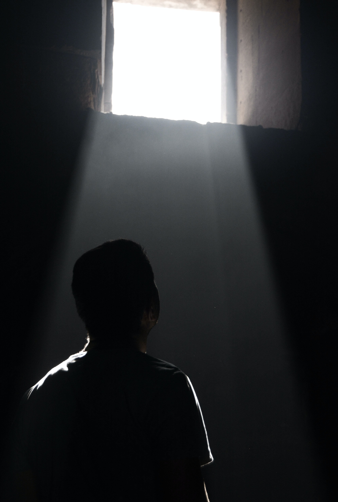
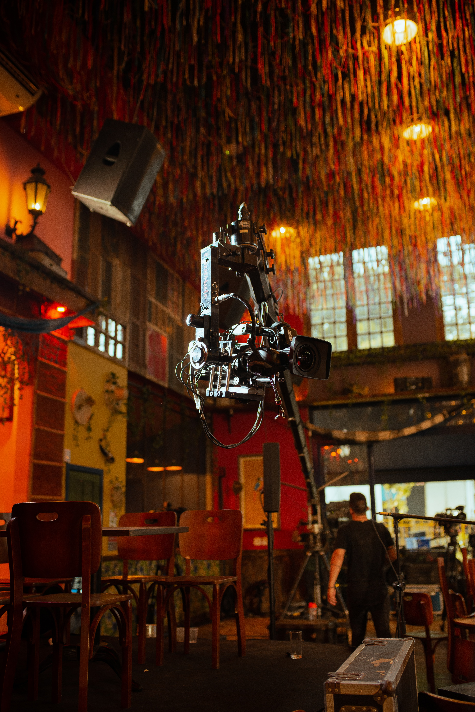
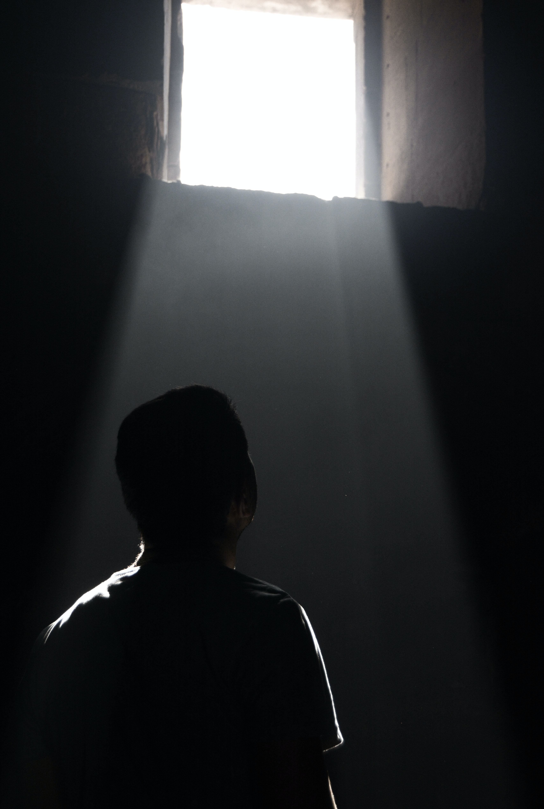
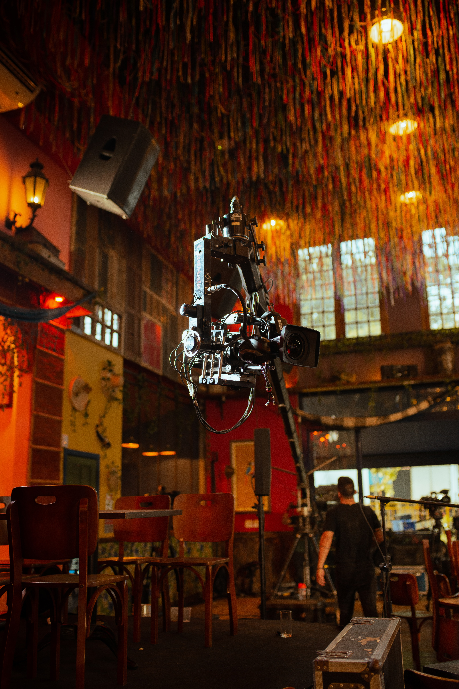

Cinematography
What is Cinematography?
Cinematography (from ancient Greek κίνημα, kìnema "movement" and γράφειν, gràphein "to write") is the art of motion picture (and more recently, electronic video camera) photography. Cinematographers use a lens to focus reflected light from objects into a real image that is transferred to some image sensor or light-sensitive material inside movie camera.[1] These exposures are created sequentially and preserved for later processing and viewing as a motion picture. Capturing images with an electronic image sensor produces an electrical charge for each pixel in the image, which is electronically processed and stored in a video file for subsequent processing or display. Images captured with photographic emulsion result in a series of invisible latent images on the film stock, which are chemically "developed" into a visible image. The images on the film stock are projected for viewing the same motion picture. Cinematography finds uses in many fields of science and business, as well as for entertainment purposes and mass communication.
Lens
Live recording for TV on a camera with a Fujinon optical lens. Lenses can be attached to the camera to give a certain look, feel, or effect by focus, color, etc. As does the human eye, the camera creates perspective and spatial relations with the rest of the world. However, unlike one's eye, a cinematographer can select different lenses for different purposes. Variation in focal length is one of the chief benefits. The focal length of the lens determines the angle of view and, therefore, the field of view. Cinematographers can choose from a range of wide-angle lenses, "normal" lenses and long focus lenses, as well as macro lenses and other special effect lens systems such as borescope lenses. Wide-angle lenses have short focal lengths and make spatial distances more obvious. A person in the distance is shown as much smaller while someone in the front will loom large. On the other hand, long focus lenses reduce such exaggerations, depicting far-off objects as seemingly close together and flattening perspective. The differences between the perspective rendering is actually not due to the focal length by itself, but by the distance between the subjects and the camera. Therefore, the use of different focal lengths in combination with different camera to subject distances creates these different rendering. Changing the focal length only while keeping the same camera position doesn't affect perspective but the camera angle of view only. A zoom lens allows a camera operator to change his focal length within a shot or quickly between setups for shots. As prime lenses offer greater optical quality and are "faster" (larger aperture openings, usable in less light) than zoom lenses, they are often employed in professional cinematography over zoom lenses. Certain scenes or even types of filmmaking, however, may require the use of zooms for speed or ease of use, as well as shots involving a zoom move. As in other photography, the control of the exposed image is done in the lens with the control of the diaphragm aperture. For proper selection, the cinematographer needs that all lenses be engraved with T-stop, not f-stop so that the eventual light loss due to the glass doesn't affect the exposure control when setting it using the usual meters. The choice of the aperture also affects image quality (aberrations) and depth of field.
 



Depth of Field
A stern looking man and a woman sit on the right side of a table with documents on the table. A top hat is on the table. An unkempt man stands to the left of the picture. In the background a boy can be seen through a window playing in the snow. A deep focus shot from Citizen Kane (1941): everything, including the hat in the foreground and the boy (young Charles Foster Kane) in the distance, is in sharp focus. Focal length and diaphragm aperture affect the depth of field of a scene – that is, how much the background, mid-ground and foreground will be rendered in "acceptable focus" (only one exact plane of the image is in precise focus) on the film or video target. Depth of field (not to be confused with depth of focus) is determined by the aperture size and the focal distance. A large or deep depth of field is generated with a very small iris aperture and focusing on a point in the distance, whereas a shallow depth of field will be achieved with a large (open) iris aperture and focusing closer to the lens. Depth of field is also governed by the format size. If one considers the field of view and angle of view, the smaller the image is, the shorter the focal length should be, as to keep the same field of view. Then, the smaller the image is, the more depth of field is obtained, for the same field of view. Therefore, 70mm has less depth of field than 35mm for a given field of view, 16mm more than 35mm, and early video cameras, as well as most modern consumer level video cameras, even more depth of field than 16mm. In Citizen Kane (1941), cinematographer Gregg Toland and director Orson Welles used tighter apertures to create every detail of the foreground and background of the sets in sharp focus. This practice is known as deep focus. Deep focus became a popular cinematographic device from the 1940s onward in Hollywood. Today, the trend is for more shallow focus. To change the plane of focus from one object or character to another within a shot is commonly known as a rack focus. Early in the transition to digital cinematography, the inability of digital video cameras to easily achieve shallow depth of field, due to their small image sensors, was initially an issue of frustration for film makers trying to emulate the look of 35mm film. Optical adapters were devised which accomplished this by mounting a larger format lens which projected its image, at the size of the larger format, on a ground glass screen preserving the depth of field. The adapter and lens then mounted on the small format video camera which in turn focused on the ground glass screen. Digital SLR still cameras have sensor sizes similar to that of the 35mm film frame, and thus are able to produce images with similar depth of field. The advent of video functions in these cameras sparked a revolution in digital cinematography, with more and more film makers adopting still cameras for the purpose because of the film-like qualities of their images. More recently, more and more dedicated video cameras are being equipped with larger sensors capable of 35mm film-like depth of field.
Lighting
Light is necessary to create an image exposure on a frame of film or on a digital target (CCD, etc.). The art of lighting for cinematography goes far beyond basic exposure, however, into the essence of visual storytelling. Lighting contributes considerably to the emotional response an audience has watching a motion picture. The increased usage of filters can greatly impact the final image and affect the lighting.
Importance of Lighting in Film Lighting in film is essential for three primary reasons: visibility, composition, and mood. Firstly, lighting ensures that the subject or scene is properly illuminated, allowing viewers to perceive the details and understand the narrative. It helps in guiding the audience's attention to specific elements within the frame, highlighting important characters or objects. Secondly, lighting contributes to the composition of a shot. Filmmakers strategically place lights to create balance, depth, and visual interest within the frame. It allows them to control the visual elements within the scene, emphasizing certain areas and de-emphasizing others. Lastly, lighting significantly impacts the mood and atmosphere of a film. By manipulating light intensity, color, and direction, filmmakers can evoke different emotions and enhance the narrative. Bright, even lighting may evoke a sense of safety and happiness, while low-key lighting with shadows can create tension, mystery, or fear. The choice of lighting style can also reflect the genre of the film, such as the high contrast lighting commonly used in film noir.
Lighting Techniques
Numerous lighting techniques are employed in filmmaking to achieve desired effects. Here are some commonly used techniques: Three-Point Lighting: This classic technique involves the use of three lights: the key light, fill light, and backlight. The key light serves as the primary source, illuminating the subject from one side to create depth and dimension. The fill light reduces shadows caused by the key light, softening the overall lighting. The backlight separates the subject from the background, providing a halo effect and enhancing the sense of depth. High Key Lighting: High key lighting produces a bright, evenly lit scene, often used in comedies or light-hearted films. It minimizes shadows, creating a cheerful and upbeat atmosphere. Low Key Lighting: Low key lighting involves using a single key light or a few strategically placed lights to create strong contrasts and deep shadows. This technique is commonly used in film noir and horror genres to evoke suspense, mystery, or fear.
Natural Lighting:
Filmmakers sometimes employ natural lighting to create an authentic, realistic look. This technique utilizes existing light sources, such as sunlight or practical lamps, without additional artificial lighting. It is often seen in outdoor scenes or films aiming for a naturalistic aesthetic. Color Lighting: The use of colored lights or gels can dramatically alter the mood and atmosphere of a scene. Different colors evoke different emotions and can enhance storytelling. For example, warm tones like red or orange may create a sense of warmth or passion, while cool tones like blue can convey sadness or isolation.
Camera Movement
Cinematography can not only depict a moving subject but can use a camera, which represents the audience's viewpoint or perspective, that moves during the course of filming. This movement plays a considerable role in the emotional language of film images and the audience's emotional reaction to the action. Techniques range from the most basic movements of panning (horizontal shift in viewpoint from a fixed position; like turning your head side-to-side) and tilting (vertical shift in viewpoint from a fixed position; like tipping your head back to look at the sky or down to look at the ground) to dollying (placing the camera on a moving platform to move it closer or farther from the subject), tracking (placing the camera on a moving platform to move it to the left or right), craning (moving the camera in a vertical position; being able to lift it off the ground as well as swing it side-to-side from a fixed base position), and combinations of the above. Early cinematographers often faced problems that were not common to other graphic artists because of the element of motion.[24] Cameras have been mounted to nearly every imaginable form of transportation. Most cameras can also be handheld, that is held in the hands of the camera operator who moves from one position to another while filming the action. Personal stabilizing platforms came into being in the late 1970s through the invention of Garrett Brown, which became known as the Steadicam. The Steadicam is a body harness and stabilization arm that connects to the camera, supporting the camera while isolating it from the operator's body movements. After the Steadicam patent expired in the early 1990s, many other companies began manufacturing their concept of the personal camera stabilizer. This invention is much more common throughout the cinematic world today. From feature-length films to the evening news, more and more networks have begun to use a personal camera stabilizer.